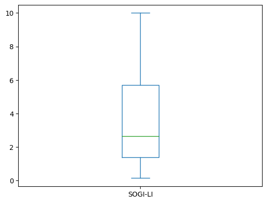
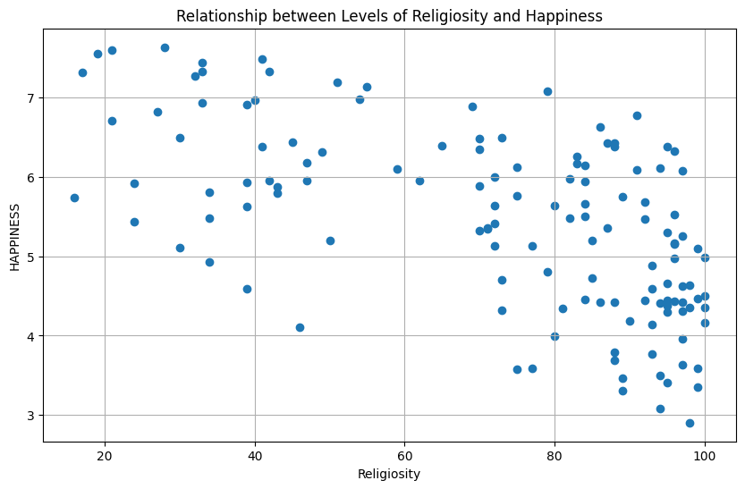
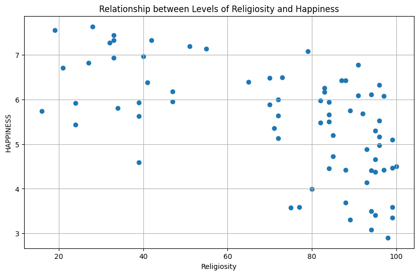
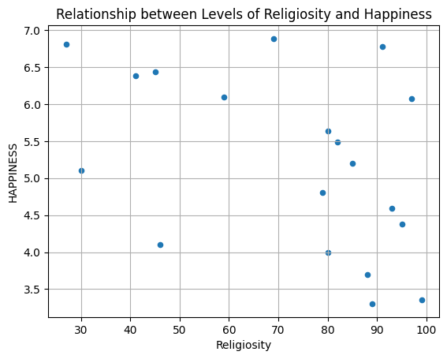
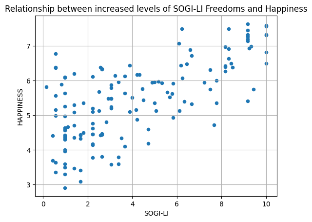
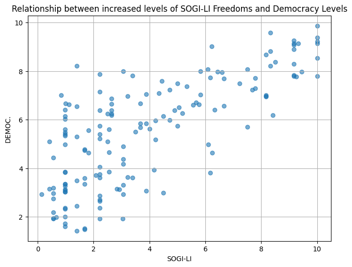
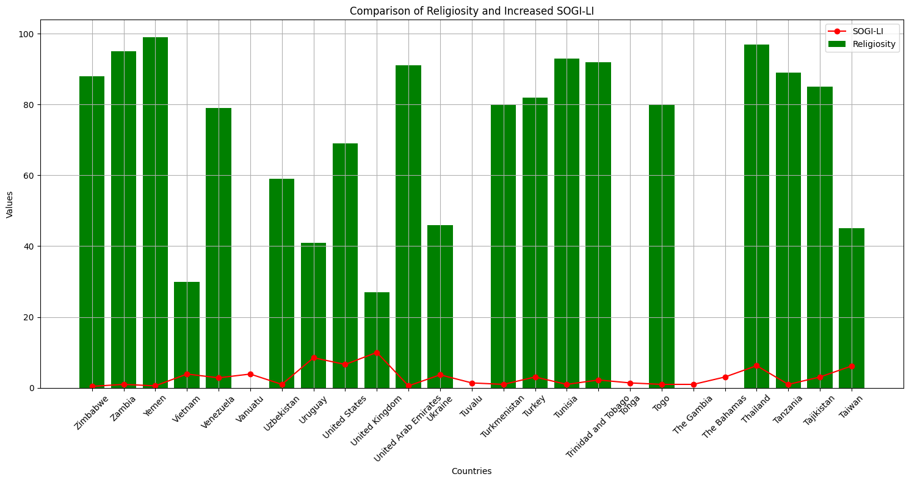

import pandas as pd
import matplotlib.pyplot as pltDH 140: Final Project
Introduction
The following project was constructed using the “Sexual Orientation and Gender-Identity (SOGI) Laws That Support and/or Limit International Development” dataset created by Thomas S. Serwatka from the University of North Florida’s Digital Commons. This dataset offers a plethora of information about 185 countries’ sexual orientation and gender identity legal index (SOGI-LI). The index is calculated based on variables identified in the dataset, such as examining the legality of same-sex sexual activity in a country, marriage & civil union, serving in the military, and gender ID markers, to name a few. The higher the score for the SOGI-LI index, the more rights and personal freedoms a person is guaranteed, and people are less bound by legal ramifications to freely and safely express their sexual orientation and gender identity. The SOGI-LI index aims to assess if each country’s laws assist international development and allow people of different gender identities to move freely and safely without oppressive legal restrictions – that is, as equal members of society. This project centers on the worldwide examination of LGBTQ+ rights and its relationship to related human rights topics, such as religious freedoms and democracy. The primary objective of this analysis is to ascertain the influence of a nation’s democratic representation and levels of religiosity on the broader scope of sexual and gender freedoms within the LGBTQ+ community.
Research Question(s): 1. How is the legality of sexual orientation and gender identity expression affected by a country’s democracy level? 2. How does the presence of increased sexual and gender freedoms (SOGI) compare to religiosity?
The broader themes of this project are surrounding sexual orientation and gender identity (SOGI), quality of life, and other personal freedoms. The impact of sexual and gender freedoms on the quality of life and other personal freedoms refers to how the recognition and protection of an individual’s sexuality and gender orientation directly influence their general well-being, social inclusion, mental health, and life satisfaction. I wish to explore this dataset because it encompasses issues surrounding legal rights, social acceptance, and freedom from discrimination and violence based on sexuality and gender orientation. Individuals who can exist and move in this world safely while expressing their sexual orientation and gender identity will have better life satifaction. Freedom of sexual and gender expression can positively affect mental, physical, and social health. By examining variables like a country’s democracy and religiosity, we can explore how these complex influences determine personal freedoms and directly influence the presence of SOGILI scores. Prior to conducting data analysis, I hypothesize that nations characterized by greater levels of democracy will exhibit a heightened legality of sexual orientation and gender expression in contrast to countries with lower democratic indicators. Finally, I hypothesize that elevated levels of religiosity within a country correspond to decreased sexual and gender freedoms than countries with a less pronounced religious influence.
Methods
Brief Data Summary:
- The data was published in 2020
- The dataset was based around a sexual orientation and gender identity legal index that was developed for 185 countries
- Variables examined in the dataset include: SOGI-LI, Religiosity, legality of sam-sex sexual-activity, DEMOC., and Happiness
- Dataset used: Cleaned_SOGILI_Data.csv accessed from https://digitalcommons.unf.edu/datasets/1/
- The data analysis was conducted using the pandas, matplotlib, and numpy packages in Python
Exploratory Data Analysis
First, the cleaned dataset containing the 185 rows and 30 columns was loaded in.
df = pd.read_csv('Cleaned_SOGILI_Data.csv')
df| continent | country | Predom. Religion | SOGI-LI | DEMOC. | HAPPINESS | Per capita GDP | % with tertiary educ. | GRI | Religiosity | ... | polit. Particpation | political culture | civil liberties | Satisfaction with GDP per capita | Social support | Healthy life expectancy | Freedom to make life choices | Generosity | Perceptions of corruption | Religiosity Level | |
|---|---|---|---|---|---|---|---|---|---|---|---|---|---|---|---|---|---|---|---|---|---|
| 0 | africa | Zimbabwe | C | 0.42 | 3.16 | 3.692 | $2,147.00 | 0.38 | 2.8 | 88.0 | ... | 4.44 | 2.50 | 3.24 | 1.151 | 1.479 | 0.599 | 0.399 | 0.065 | 0.025 | religious |
| 1 | africa | Zambia | C | 0.97 | 5.61 | 4.377 | $1,539.90 | 0.49 | 3.2 | 95.0 | ... | 3.89 | 5.63 | 4.41 | 0.493 | 1.048 | 0.454 | 0.504 | 0.352 | 0.055 | religious |
| 2 | asia | Yemen | M | 0.56 | 1.95 | 3.355 | $944.41 | 1.50 | 4.7 | 99.0 | ... | 3.89 | 5.63 | 3.24 | 0.357 | 1.094 | 0.248 | 0.406 | 0.132 | 0.099 | religious |
| 3 | asia | Vietnam | X | 3.89 | 3.08 | 5.103 | $2,563.82 | 3.27 | 7.6 | 30.0 | ... | 3.21 | 3.75 | 4.41 | 0.689 | 1.172 | 0.048 | 0.462 | 0.201 | 0.032 | nonreligious |
| 4 | america | Venezuela | C | 2.83 | 3.16 | 4.806 | NaN | 2.96 | 3.9 | 79.0 | ... | 4.44 | 5.00 | 2.94 | 0.985 | 1.350 | 0.553 | 0.496 | 0.116 | 0.148 | religious |
| ... | ... | ... | ... | ... | ... | ... | ... | ... | ... | ... | ... | ... | ... | ... | ... | ... | ... | ... | ... | ... | ... |
| 179 | africa | Angola | C | 3.39 | 3.62 | 3.795 | $3,432.39 | NaN | 4.1 | 88.0 | ... | 5.56 | 8.75 | 10.00 | 1.330 | 1.532 | 0.896 | 0.653 | 0.321 | 0.291 | religious |
| 180 | europe | Andorra | C | 5.28 | NaN | NaN | $42,029.76 | NaN | 2.4 | NaN | ... | NaN | 10.00 | 9.41 | 1.355 | 1.501 | 0.913 | 0.659 | 0.285 | 0.383 | nonreligious |
| 181 | africa | Algeria | M | 1.39 | 3.50 | 5.295 | $4,278.85 | 6.66 | 8.0 | 95.0 | ... | 3.89 | 9.38 | 9.12 | 1.351 | 1.590 | 0.868 | 0.683 | 0.284 | 0.408 | religious |
| 182 | europe | Albania | M | 4.72 | 5.98 | 4.586 | $5,253.63 | 0.93 | 1.6 | 39.0 | ... | 5.56 | 8.13 | 9.12 | 1.301 | 1.559 | 0.883 | 0.533 | 0.354 | 0.272 | nonreligious |
| 183 | asia | Afghanistan | M | 0.56 | 2.97 | 3.632 | $520.90 | NaN | 6.5 | 97.0 | ... | 4.44 | 5.63 | 8.53 | 1.293 | 1.466 | 0.908 | 0.520 | 0.098 | 0.176 | religious |
184 rows × 30 columns
Next, I decided to display the column names for better viewing purposes.
df.columnsIndex(['continent', 'country', 'Predom. Religion', 'SOGI-LI', 'DEMOC.',
'HAPPINESS', 'Per capita GDP', '% with tertiary educ.', 'GRI',
'Religiosity', 'SHI', 'legality of sam-sex sexual-activity',
'marriage/ civil unions', 'same-sex coupleadoptions',
'serving in the military', 'antidiscrimination laws',
'gender ID markers', 'Democracy Status',
'electoral process and pluralism', 'funct. Of gov',
'polit. Particpation', 'political culture', 'civil liberties',
'Satisfaction with GDP per capita', 'Social support',
'Healthy life expectancy', 'Freedom to make life choices', 'Generosity',
'Perceptions of corruption', 'Religiosity Level'],
dtype='object')df.describe(include = 'all')| continent | country | Predom. Religion | SOGI-LI | DEMOC. | HAPPINESS | Per capita GDP | % with tertiary educ. | GRI | Religiosity | ... | polit. Particpation | political culture | civil liberties | Satisfaction with GDP per capita | Social support | Healthy life expectancy | Freedom to make life choices | Generosity | Perceptions of corruption | Religiosity Level | |
|---|---|---|---|---|---|---|---|---|---|---|---|---|---|---|---|---|---|---|---|---|---|
| count | 184 | 184 | 184 | 184.000000 | 158.000000 | 144.000000 | 170 | 135.000000 | 174.000000 | 141.000000 | ... | 158.000000 | 158.000000 | 158.000000 | 144.000000 | 144.000000 | 144.000000 | 144.000000 | 144.000000 | 143.000000 | 184 |
| unique | 5 | 184 | 7 | NaN | NaN | NaN | 170 | NaN | NaN | NaN | ... | NaN | NaN | NaN | NaN | NaN | NaN | NaN | NaN | NaN | 2 |
| top | asia | Zimbabwe | C | NaN | NaN | NaN | $2,147.00 | NaN | NaN | NaN | ... | NaN | NaN | NaN | NaN | NaN | NaN | NaN | NaN | NaN | religious |
| freq | 48 | 1 | 109 | NaN | NaN | NaN | 1 | NaN | NaN | NaN | ... | NaN | NaN | NaN | NaN | NaN | NaN | NaN | NaN | NaN | 105 |
| mean | NaN | NaN | NaN | 3.714783 | 5.552342 | 5.423583 | NaN | 8.434593 | 3.347126 | 72.914894 | ... | 5.294810 | 5.628481 | 5.882975 | 0.908007 | 1.220715 | 0.609410 | 0.460187 | 0.181313 | 0.114811 | NaN |
| std | NaN | NaN | NaN | 2.815376 | 2.199503 | 1.131189 | NaN | 7.277153 | 2.149491 | 25.057502 | ... | 1.870384 | 1.640903 | 2.647954 | 0.392075 | 0.306274 | 0.243671 | 0.160375 | 0.100962 | 0.099499 | NaN |
| min | NaN | NaN | NaN | 0.140000 | 1.430000 | 2.905000 | NaN | 0.000000 | 0.200000 | 16.000000 | ... | 1.110000 | 1.880000 | 0.000000 | 0.000000 | 0.000000 | 0.000000 | 0.000000 | 0.000000 | 0.000000 | NaN |
| 25% | NaN | NaN | NaN | 1.390000 | 3.595000 | 4.467250 | NaN | 2.045000 | 1.625000 | 50.000000 | ... | 3.890000 | 4.380000 | 3.530000 | 0.655750 | 1.066750 | 0.439000 | 0.358250 | 0.107500 | 0.050500 | NaN |
| 50% | NaN | NaN | NaN | 2.640000 | 5.740000 | 5.451000 | NaN | 6.650000 | 2.850000 | 83.000000 | ... | 5.560000 | 5.630000 | 6.180000 | 0.970000 | 1.280000 | 0.667500 | 0.497500 | 0.173500 | 0.082000 | NaN |
| 75% | NaN | NaN | NaN | 5.697500 | 7.237500 | 6.272500 | NaN | 13.285000 | 4.400000 | 94.000000 | ... | 6.670000 | 6.250000 | 8.240000 | 1.212250 | 1.469500 | 0.786250 | 0.580750 | 0.239000 | 0.143000 | NaN |
| max | NaN | NaN | NaN | 10.000000 | 9.870000 | 7.632000 | NaN | 30.040000 | 8.400000 | 100.000000 | ... | 10.000000 | 10.000000 | 10.000000 | 2.096000 | 1.644000 | 1.030000 | 0.724000 | 0.598000 | 0.457000 | NaN |
11 rows × 30 columns
The data frame above allows me to examine summary statistics for each numeric column. Moreover, it will enable me to identify potential outliers and unusual patterns or identify missing values from columns. For example, I can tell that there are a certain number of missing or unidentified values located in the ‘Religiosity’ column from the “NaN” values for “unique,” “top,” and “freq.” Moreover, ‘Religiosity’ for each continent tends to range from 25 to 100, with an average of 70.
df['SOGI-LI'].describe()count 184.000000
mean 3.714783
std 2.815376
min 0.140000
25% 1.390000
50% 2.640000
75% 5.697500
max 10.000000
Name: SOGI-LI, dtype: float64df.sort_values(by='SOGI-LI',
ignore_index=True).loc[0:184, 'SOGI-LI'].plot(kind='box')<Axes: >
Here the boxplot displays the intequartile range with the median closer to lower Q1. That is, the distribution is positively skewed for SOGI-LI scores, also indicating no outliers outside the interquartile range above the upper quartile and below the lower quartile.
df.head()| continent | country | Predom. Religion | SOGI-LI | DEMOC. | HAPPINESS | Per capita GDP | % with tertiary educ. | GRI | Religiosity | ... | polit. Particpation | political culture | civil liberties | Satisfaction with GDP per capita | Social support | Healthy life expectancy | Freedom to make life choices | Generosity | Perceptions of corruption | Religiosity Level | |
|---|---|---|---|---|---|---|---|---|---|---|---|---|---|---|---|---|---|---|---|---|---|
| 0 | africa | Zimbabwe | C | 0.42 | 3.16 | 3.692 | $2,147.00 | 0.38 | 2.8 | 88.0 | ... | 4.44 | 2.50 | 3.24 | 1.151 | 1.479 | 0.599 | 0.399 | 0.065 | 0.025 | religious |
| 1 | africa | Zambia | C | 0.97 | 5.61 | 4.377 | $1,539.90 | 0.49 | 3.2 | 95.0 | ... | 3.89 | 5.63 | 4.41 | 0.493 | 1.048 | 0.454 | 0.504 | 0.352 | 0.055 | religious |
| 2 | asia | Yemen | M | 0.56 | 1.95 | 3.355 | $944.41 | 1.50 | 4.7 | 99.0 | ... | 3.89 | 5.63 | 3.24 | 0.357 | 1.094 | 0.248 | 0.406 | 0.132 | 0.099 | religious |
| 3 | asia | Vietnam | X | 3.89 | 3.08 | 5.103 | $2,563.82 | 3.27 | 7.6 | 30.0 | ... | 3.21 | 3.75 | 4.41 | 0.689 | 1.172 | 0.048 | 0.462 | 0.201 | 0.032 | nonreligious |
| 4 | america | Venezuela | C | 2.83 | 3.16 | 4.806 | NaN | 2.96 | 3.9 | 79.0 | ... | 4.44 | 5.00 | 2.94 | 0.985 | 1.350 | 0.553 | 0.496 | 0.116 | 0.148 | religious |
5 rows × 30 columns
df.info()<class 'pandas.core.frame.DataFrame'>
RangeIndex: 184 entries, 0 to 183
Data columns (total 30 columns):
# Column Non-Null Count Dtype
--- ------ -------------- -----
0 continent 184 non-null object
1 country 184 non-null object
2 Predom. Religion 184 non-null object
3 SOGI-LI 184 non-null float64
4 DEMOC. 158 non-null float64
5 HAPPINESS 144 non-null float64
6 Per capita GDP 170 non-null object
7 % with tertiary educ. 135 non-null float64
8 GRI 174 non-null float64
9 Religiosity 141 non-null float64
10 SHI 174 non-null float64
11 legality of sam-sex sexual-activity 182 non-null float64
12 marriage/ civil unions 184 non-null float64
13 same-sex coupleadoptions 184 non-null float64
14 serving in the military 184 non-null float64
15 antidiscrimination laws 184 non-null float64
16 gender ID markers 184 non-null float64
17 Democracy Status 158 non-null object
18 electoral process and pluralism 158 non-null float64
19 funct. Of gov 157 non-null float64
20 polit. Particpation 158 non-null float64
21 political culture 158 non-null float64
22 civil liberties 158 non-null float64
23 Satisfaction with GDP per capita 144 non-null float64
24 Social support 144 non-null float64
25 Healthy life expectancy 144 non-null float64
26 Freedom to make life choices 144 non-null float64
27 Generosity 144 non-null float64
28 Perceptions of corruption 143 non-null float64
29 Religiosity Level 184 non-null object
dtypes: float64(24), object(6)
memory usage: 43.2+ KBdf_records_dropped = df.dropna(axis=0, how='any')
df_records_dropped.info()<class 'pandas.core.frame.DataFrame'>
Int64Index: 75 entries, 0 to 182
Data columns (total 30 columns):
# Column Non-Null Count Dtype
--- ------ -------------- -----
0 continent 75 non-null object
1 country 75 non-null object
2 Predom. Religion 75 non-null object
3 SOGI-LI 75 non-null float64
4 DEMOC. 75 non-null float64
5 HAPPINESS 75 non-null float64
6 Per capita GDP 75 non-null object
7 % with tertiary educ. 75 non-null float64
8 GRI 75 non-null float64
9 Religiosity 75 non-null float64
10 SHI 75 non-null float64
11 legality of sam-sex sexual-activity 75 non-null float64
12 marriage/ civil unions 75 non-null float64
13 same-sex coupleadoptions 75 non-null float64
14 serving in the military 75 non-null float64
15 antidiscrimination laws 75 non-null float64
16 gender ID markers 75 non-null float64
17 Democracy Status 75 non-null object
18 electoral process and pluralism 75 non-null float64
19 funct. Of gov 75 non-null float64
20 polit. Particpation 75 non-null float64
21 political culture 75 non-null float64
22 civil liberties 75 non-null float64
23 Satisfaction with GDP per capita 75 non-null float64
24 Social support 75 non-null float64
25 Healthy life expectancy 75 non-null float64
26 Freedom to make life choices 75 non-null float64
27 Generosity 75 non-null float64
28 Perceptions of corruption 75 non-null float64
29 Religiosity Level 75 non-null object
dtypes: float64(24), object(6)
memory usage: 18.2+ KBdf_records_dropped| continent | country | Predom. Religion | SOGI-LI | DEMOC. | HAPPINESS | Per capita GDP | % with tertiary educ. | GRI | Religiosity | ... | polit. Particpation | political culture | civil liberties | Satisfaction with GDP per capita | Social support | Healthy life expectancy | Freedom to make life choices | Generosity | Perceptions of corruption | Religiosity Level | |
|---|---|---|---|---|---|---|---|---|---|---|---|---|---|---|---|---|---|---|---|---|---|
| 0 | africa | Zimbabwe | C | 0.42 | 3.16 | 3.692 | $2,147.00 | 0.38 | 2.8 | 88.0 | ... | 4.44 | 2.50 | 3.24 | 1.151 | 1.479 | 0.599 | 0.399 | 0.065 | 0.025 | religious |
| 1 | africa | Zambia | C | 0.97 | 5.61 | 4.377 | $1,539.90 | 0.49 | 3.2 | 95.0 | ... | 3.89 | 5.63 | 4.41 | 0.493 | 1.048 | 0.454 | 0.504 | 0.352 | 0.055 | religious |
| 2 | asia | Yemen | M | 0.56 | 1.95 | 3.355 | $944.41 | 1.50 | 4.7 | 99.0 | ... | 3.89 | 5.63 | 3.24 | 0.357 | 1.094 | 0.248 | 0.406 | 0.132 | 0.099 | religious |
| 7 | america | Uruguay | C | 8.50 | 8.38 | 6.379 | $17,277.97 | 3.50 | 1.1 | 41.0 | ... | 6.11 | 2.50 | 3.82 | 0.332 | 0.537 | 0.255 | 0.085 | 0.191 | 0.036 | nonreligious |
| 9 | europe | United Kingdom | C | 10.00 | 8.53 | 6.814 | $42,491.36 | 15.31 | 2.6 | 27.0 | ... | 8.33 | 5.00 | 0.88 | 0.442 | 1.073 | 0.343 | 0.244 | 0.083 | 0.064 | nonreligious |
| ... | ... | ... | ... | ... | ... | ... | ... | ... | ... | ... | ... | ... | ... | ... | ... | ... | ... | ... | ... | ... | ... |
| 173 | europe | Austria | C | 9.17 | 8.29 | 7.139 | $51,512.91 | 9.37 | 4.2 | 55.0 | ... | 8.33 | 8.13 | 10.00 | 1.268 | 1.601 | 0.876 | 0.669 | 0.365 | 0.389 | religious |
| 174 | oceana | Australia | C | 9.17 | 9.09 | 7.272 | $57,305.30 | 18.52 | 1.1 | 32.0 | ... | 7.78 | 8.75 | 10.00 | 1.340 | 1.573 | 0.910 | 0.647 | 0.361 | 0.302 | nonreligious |
| 177 | america | Argentina | C | 8.17 | 7.02 | 6.388 | $11,652.57 | 2.87 | 2.7 | 65.0 | ... | 6.11 | 6.88 | 8.53 | 1.200 | 1.532 | 0.737 | 0.553 | 0.086 | 0.174 | religious |
| 181 | africa | Algeria | M | 1.39 | 3.50 | 5.295 | $4,278.85 | 6.66 | 8.0 | 95.0 | ... | 3.89 | 9.38 | 9.12 | 1.351 | 1.590 | 0.868 | 0.683 | 0.284 | 0.408 | religious |
| 182 | europe | Albania | M | 4.72 | 5.98 | 4.586 | $5,253.63 | 0.93 | 1.6 | 39.0 | ... | 5.56 | 8.13 | 9.12 | 1.301 | 1.559 | 0.883 | 0.533 | 0.354 | 0.272 | nonreligious |
75 rows × 30 columns
df_records_dropped.describe()| SOGI-LI | DEMOC. | HAPPINESS | % with tertiary educ. | GRI | Religiosity | SHI | legality of sam-sex sexual-activity | marriage/ civil unions | same-sex coupleadoptions | ... | funct. Of gov | polit. Particpation | political culture | civil liberties | Satisfaction with GDP per capita | Social support | Healthy life expectancy | Freedom to make life choices | Generosity | Perceptions of corruption | |
|---|---|---|---|---|---|---|---|---|---|---|---|---|---|---|---|---|---|---|---|---|---|
| count | 75.000000 | 75.000000 | 75.000000 | 75.000000 | 75.000000 | 75.000000 | 75.000000 | 75.000000 | 75.000000 | 75.000000 | ... | 75.000000 | 75.000000 | 75.000000 | 75.000000 | 75.000000 | 75.000000 | 75.000000 | 75.000000 | 75.000000 | 75.000000 |
| mean | 4.604667 | 6.030400 | 5.514827 | 7.924267 | 3.330667 | 71.906667 | 3.016000 | 0.791067 | 0.451067 | 0.310000 | ... | 5.431600 | 5.622667 | 5.436000 | 5.557600 | 0.883427 | 1.231107 | 0.598520 | 0.454733 | 0.193813 | 0.112440 |
| std | 3.137432 | 2.001044 | 1.216339 | 6.279161 | 2.046683 | 25.986573 | 2.255207 | 0.334904 | 0.342355 | 0.424821 | ... | 2.423144 | 1.728145 | 1.656555 | 2.753206 | 0.372648 | 0.319256 | 0.239778 | 0.169129 | 0.098344 | 0.091634 |
| min | 0.140000 | 1.520000 | 2.905000 | 0.150000 | 0.200000 | 16.000000 | 0.000000 | 0.000000 | 0.000000 | 0.000000 | ... | 0.000000 | 1.110000 | 1.880000 | 0.000000 | 0.024000 | 0.000000 | 0.010000 | 0.000000 | 0.029000 | 0.000000 |
| 25% | 1.670000 | 4.830000 | 4.543000 | 2.150000 | 1.850000 | 47.000000 | 1.300000 | 0.500000 | 0.330000 | 0.000000 | ... | 4.290000 | 4.440000 | 4.380000 | 3.240000 | 0.600500 | 1.075500 | 0.439000 | 0.329000 | 0.112000 | 0.054500 |
| 50% | 4.220000 | 6.240000 | 5.681000 | 6.650000 | 2.800000 | 83.000000 | 2.600000 | 1.000000 | 0.330000 | 0.000000 | ... | 5.360000 | 5.560000 | 5.000000 | 5.880000 | 0.918000 | 1.314000 | 0.635000 | 0.504000 | 0.175000 | 0.097000 |
| 75% | 7.725000 | 7.595000 | 6.383500 | 12.745000 | 4.350000 | 94.000000 | 4.450000 | 1.000000 | 0.670000 | 0.500000 | ... | 7.140000 | 6.670000 | 6.250000 | 8.240000 | 1.188000 | 1.470000 | 0.765000 | 0.570500 | 0.263000 | 0.136000 |
| max | 10.000000 | 9.260000 | 7.632000 | 24.740000 | 8.300000 | 100.000000 | 8.800000 | 1.000000 | 1.000000 | 1.000000 | ... | 9.640000 | 8.890000 | 10.000000 | 10.000000 | 1.474000 | 1.644000 | 1.030000 | 0.724000 | 0.392000 | 0.444000 |
8 rows × 24 columns
In the above dataframes, I utilized the Pandas DataFrame method ‘.dropna()’ to remove rows or records which contain atleast one missing value. However, I decided upon viewing the leaving the missing values in the rows of my dataset for my analysis, since dropping records can drastically reduce the data, but also because removing NaN values can potentially introduce bias if the missing data is not random. Moreover, I could lose information that could be valuable to my analysis. For example, removing NaN values removes columns such as ‘continent,’ ‘country,’ ‘Predom. Religion,’ and ‘Religiosity Level,’ to name a few. Thus, I will leave the summary statistics dataframe for visualization purposes to display what it looks like to drop the columns with missing values.
In the following plot, I was interested in exploring the variables ‘Religiosity’ and ‘HAPPINESS’ from the above dataset. I decided upon a scatter plot since scatter plots visually display the relationship between two variables and indicate potential patterns, clusters, or trends that may exist between one another.
x = df['Religiosity']
y = df['HAPPINESS']
plt.figure(figsize=(10, 6))
plt.scatter(x,y)
plt.xlabel('Religiosity')
plt.ylabel('HAPPINESS')
plt.title('Relationship between Levels of Religiosity and Happiness')
plt.grid(True)
plt.show()
From the above plot, we can see that the relationship between religiosity and happiness in each continent shows a weak negative correlation. Meaning, as variable ‘Religiosity’ increases, the variable ‘HAPPINESS’ is decreasing, and the points are not tightly clustered in a linear shape. This could mean that the relationship between happiness and religiosity in each continent vary from country to country and does not display obvious associations between the two variables by the scatter plot.
In the following plot, I decided to visualize what it would look like to display values using the Pandas DataFrame method ‘.dropna()’. This new plot I designed shows me a fewer plots than the plot above, and similarly shows a weak or weak negative correlation.
x = df_records_dropped['Religiosity']
y = df_records_dropped['HAPPINESS']
plt.figure(figsize=(10, 6))
plt.scatter(x,y)
plt.xlabel('Religiosity')
plt.ylabel('HAPPINESS')
plt.title('Relationship between Levels of Religiosity and Happiness')
plt.grid(True)
plt.show()
Below I am creating a subset of the dataframe in order to reduce complexity and focus on specific aspects of the data. While viewing the entire dataset may be useful at first glance, creating visualizations using a subset of the dataframe can enhance the focus, clarity, and effectiveness of visualizations.
b = df[0:25]b| continent | country | Predom. Religion | SOGI-LI | DEMOC. | HAPPINESS | Per capita GDP | % with tertiary educ. | GRI | Religiosity | ... | polit. Particpation | political culture | civil liberties | Satisfaction with GDP per capita | Social support | Healthy life expectancy | Freedom to make life choices | Generosity | Perceptions of corruption | Religiosity Level | |
|---|---|---|---|---|---|---|---|---|---|---|---|---|---|---|---|---|---|---|---|---|---|
| 0 | africa | Zimbabwe | C | 0.42 | 3.16 | 3.692 | $2,147.00 | 0.38 | 2.8 | 88.0 | ... | 4.44 | 2.50 | 3.24 | 1.151 | 1.479 | 0.599 | 0.399 | 0.065 | 0.025 | religious |
| 1 | africa | Zambia | C | 0.97 | 5.61 | 4.377 | $1,539.90 | 0.49 | 3.2 | 95.0 | ... | 3.89 | 5.63 | 4.41 | 0.493 | 1.048 | 0.454 | 0.504 | 0.352 | 0.055 | religious |
| 2 | asia | Yemen | M | 0.56 | 1.95 | 3.355 | $944.41 | 1.50 | 4.7 | 99.0 | ... | 3.89 | 5.63 | 3.24 | 0.357 | 1.094 | 0.248 | 0.406 | 0.132 | 0.099 | religious |
| 3 | asia | Vietnam | X | 3.89 | 3.08 | 5.103 | $2,563.82 | 3.27 | 7.6 | 30.0 | ... | 3.21 | 3.75 | 4.41 | 0.689 | 1.172 | 0.048 | 0.462 | 0.201 | 0.032 | nonreligious |
| 4 | america | Venezuela | C | 2.83 | 3.16 | 4.806 | NaN | 2.96 | 3.9 | 79.0 | ... | 4.44 | 5.00 | 2.94 | 0.985 | 1.350 | 0.553 | 0.496 | 0.116 | 0.148 | religious |
| 5 | oceana | Vanuatu | C | 3.89 | NaN | NaN | $3,033.41 | NaN | 1.5 | NaN | ... | NaN | NaN | NaN | 0.000 | 0.712 | 0.115 | 0.674 | 0.238 | 0.282 | nonreligious |
| 6 | asia | Uzbekistan | M | 0.97 | 2.01 | 6.096 | $1,532.37 | NaN | 8.0 | 59.0 | ... | 2.22 | 5.63 | 3.82 | 1.649 | 1.303 | 0.748 | 0.654 | 0.256 | 0.171 | religious |
| 7 | america | Uruguay | C | 8.50 | 8.38 | 6.379 | $17,277.97 | 3.50 | 1.1 | 41.0 | ... | 6.11 | 2.50 | 3.82 | 0.332 | 0.537 | 0.255 | 0.085 | 0.191 | 0.036 | nonreligious |
| 8 | america | United States | C | 6.60 | 7.96 | 6.886 | $62,641.01 | 26.76 | 3.3 | 69.0 | ... | 7.78 | 5.00 | 2.65 | 2.096 | 0.776 | 0.670 | 0.284 | 0.186 | NaN | religious |
| 9 | europe | United Kingdom | C | 10.00 | 8.53 | 6.814 | $42,491.36 | 15.31 | 2.6 | 27.0 | ... | 8.33 | 5.00 | 0.88 | 0.442 | 1.073 | 0.343 | 0.244 | 0.083 | 0.064 | nonreligious |
| 10 | asia | United Arab Emirates | M | 0.56 | 2.76 | 6.774 | $43,004.95 | 8.54 | 5.8 | 91.0 | ... | 2.22 | 3.13 | 1.47 | 1.379 | 1.331 | 0.633 | 0.509 | 0.098 | 0.127 | religious |
| 11 | europe | Ukraine | C | 3.67 | 5.69 | 4.103 | $3,095.17 | 24.55 | 3.8 | 46.0 | ... | 6.67 | NaN | NaN | NaN | NaN | NaN | NaN | NaN | NaN | nonreligious |
| 12 | oceana | Tuvalu | C | 1.39 | NaN | NaN | $3,700.71 | NaN | 2.0 | NaN | ... | NaN | 3.13 | 2.35 | NaN | NaN | NaN | NaN | NaN | NaN | nonreligious |
| 13 | asia | Turkmenistan | M | 0.97 | 1.72 | 5.636 | $6,966.64 | NaN | 7.9 | 80.0 | ... | 2.22 | 6.25 | 8.53 | 0.819 | 1.493 | 0.693 | 0.575 | 0.096 | 0.031 | religious |
| 14 | asia | Turkey | M | 3.06 | 4.37 | 5.483 | $9,311.37 | 5.28 | 7.1 | 82.0 | ... | 5.00 | 6.25 | 5.88 | 0.900 | 0.906 | 0.690 | 0.271 | 0.040 | 0.063 | religious |
| 15 | africa | Tunisia | M | 0.97 | 6.41 | 4.592 | $3,446.61 | 7.38 | NaN | 93.0 | ... | 7.78 | 6.25 | 6.47 | 0.429 | 1.117 | 0.433 | 0.406 | 0.138 | 0.082 | religious |
| 16 | america | Trinidad and Tobago | X | 2.22 | 7.16 | NaN | $16,843.70 | 6.48 | 0.8 | 92.0 | ... | 6.11 | 6.88 | 6.47 | 0.562 | 1.047 | 0.295 | 0.503 | 0.221 | 0.082 | religious |
| 17 | oceana | Tonga | C | 1.39 | NaN | 6.192 | $4,364.02 | 2.91 | 1.6 | NaN | ... | NaN | 6.25 | 5.88 | 0.186 | 0.541 | 0.306 | 0.531 | 0.210 | 0.080 | nonreligious |
| 18 | africa | Togo | X | 0.97 | 3.10 | 3.999 | $671.84 | 1.51 | 2.1 | 80.0 | ... | 3.33 | 5.63 | 4.41 | 0.455 | 0.991 | 0.381 | 0.481 | 0.270 | 0.097 | religious |
| 19 | africa | The Gambia | M | 0.97 | NaN | NaN | $712.45 | NaN | 0.7 | NaN | ... | NaN | 5.63 | 5.59 | 0.076 | 0.858 | 0.267 | 0.419 | 0.206 | 0.030 | nonreligious |
| 20 | america | The Bahamas | C | 3.06 | NaN | NaN | NaN | NaN | 3.0 | NaN | ... | NaN | 5.63 | 4.41 | 0.779 | 0.797 | 0.669 | 0.460 | 0.026 | 0.074 | nonreligious |
| 21 | asia | Thailand | B | 6.25 | 4.63 | 6.072 | $7,273.56 | 10.47 | 3.4 | 97.0 | ... | 5.00 | 3.75 | 2.94 | 0.885 | 1.025 | 0.553 | 0.312 | 0.092 | 0.107 | religious |
| 22 | africa | Tanzania | C | 0.97 | 5.41 | 3.303 | $1,050.68 | 0.36 | 4.7 | 89.0 | ... | 5.00 | 5.00 | 2.65 | 0.308 | 0.950 | 0.391 | 0.452 | 0.220 | 0.146 | religious |
| 23 | asia | Tajikistan | M | 3.05 | 1.93 | 5.199 | $826.62 | 3.74 | 7.5 | 85.0 | ... | 1.67 | 4.38 | 2.65 | 0.535 | 0.891 | 0.182 | 0.454 | 0.183 | 0.043 | religious |
| 24 | asia | Taiwan | B | 6.17 | 7.73 | 6.441 | NaN | NaN | 1.7 | 45.0 | ... | 6.11 | 4.38 | 2.94 | 0.344 | 0.792 | 0.211 | 0.394 | 0.185 | 0.094 | nonreligious |
25 rows × 30 columns
b.plot (x = 'Religiosity', y = 'HAPPINESS', kind = 'scatter')
plt.xlabel('Religiosity')
plt.ylabel('HAPPINESS')
plt.title('Relationship between Levels of Religiosity and Happiness')
plt.grid(True)
plt.show()
In the above scatter plot for a subset of the data (i.e., the first 25 rows), we can see the levels of religiosity and happiness has a strongly weak negative correlation or no correlation, at all. This further indicates that religiosity levels alone are not a strong predictor of happiness country to country.
Below I decided upon using the entire dataframe rather than a subset of the plot, since the subset could possibly lead to a loss of context, potentially leading to misinterpretation. Moreover, if the subset is not representative of the entire dataset, the visualizations may not represent the true characteristics of the data. For example, we can see that the subset of the dataframe titled ‘b’ excludes the continent ‘antarctica’ that is included in the regular dataframe.
df.plot (x = 'SOGI-LI', y = 'HAPPINESS', kind = 'scatter')
plt.xlabel('SOGI-LI')
plt.ylabel('HAPPINESS')
plt.title('Relationship between increased levels of SOGI-LI Freedoms and Happiness')
plt.grid(True)
plt.show()
In the above plot, we can see a weak positive correlation between increased SOGI-LI freedoms and happiness levels. Meaning, as both variables tend to increase in response to one another, their relationship is not very strong. In terms of the dataset, this means that the higher a continents SOGI-LI (i.e., Sexual Orientation and Gender Identity) index score is, the higher their levels of happiness, but their relationship also varies depending on other variables country to country.
Results
Data Analysis
x = df['SOGI-LI']
y = df['DEMOC.']
plt.figure(figsize=(8, 6))
plt.scatter(x, y, alpha=0.6)
plt.xlabel('SOGI-LI')
plt.ylabel('DEMOC.')
plt.title('Relationship between increased levels of SOGI-LI Freedoms and Democracy Levels')
plt.grid(True)
plt.show()
Above is a scatter plot that displays the relationship between increased levels of SOGI-LI freedoms and democracy levels by country. We can see that the scatter plot between ‘SOGI-LI’ index scores and ‘DEMOC.’ scores display a positive correlation or weak positive correlation, with SOGI-LI scores increasing in response to democracy increasing. This is in line with my initial hypothesis, where I claim that sexual orientation and gender identity freedoms raise significantly higher if democracy levels for a country are high, as well. More importantly, it illustrates how more democratic nations allow people equal rights to move safely and freely from discrimination. Democratic nations are typically founded on principles of human rights, equality, and individual freedoms for all. These values encourage the protection of rights for LGBTQ+ people, and prevent discrimination, further ensuring equal treatment under the rule of law.
countries = b['country']
x = b['SOGI-LI']
y = b['Religiosity']
plt.figure(figsize=(15, 8))
plt.bar(countries, y, label='Religiosity', color='green')
plt.plot(countries, x, marker='o', color='red', label='SOGI-LI')
plt.xlabel('Countries')
plt.ylabel('Values')
plt.title('Comparison of Religiosity and Increased SOGI-LI')
plt.xticks(rotation=45)
plt.legend()
plt.grid(True)
plt.tight_layout()
plt.show()
Above is a bar plot that displays a comparison of religiosity to increased SOGI-LI index scores. The x-axis is representative of each country from the subset of the data, which gives us a snapshot of the dataset used in the exploratory phase. I decided to use the subset of the data in order to accurately display the continents and the way religiosity compares to increased sexual orientation and gender identity. In the plot, we can see that countries with higher rates of religiosity typically display lower sexual orientation and gender identity freedoms. For example, countries like Zimbabwe and Yemen display a significant decrease in SOGI-LI index scores than the United Kingdom and United States. However, Thailand also displays high levels of religiosity but higher levels of SOGI-LI index scores. This could mean that, although higher rates of religiosity typically mean lower SOGI-LI index scores in most countries, the relationship between religiosity and SOGI freedoms may be influenced by cultural factors. For example, Thailand may have more inclusive policies due to historical and cultural practices that support acceptance of different identities. This observation is in line with an article by Reuters, which states that Thailand has one of Asia’s most open and visible lesbian, gay, bisexual and transgender (LGBT) communities https://www.reuters.com/world/asia-pacific/thailand-edges-closer-legalising-same-sex-unions-2022-06-15/.
Discussion
After using Python’s matplotlib and pandas libraries for analysis, this project was meant to study the impact of religiosity and democracy levels on sexual orientation and gender freedoms on a global scale. I aim to analyze the relationship between high levels of religiosity and democracy on sexual orientation and gender identity levels – that is, if the two are positively or negatively correlated. These findings are helpful because they help unveil the complexities of the relationships between groups of religiosity and levels of democracy to a country’s SOGI score. For democracy levels, I was able to ascertain that higher rates of sexual orientation and gender identity freedoms positively correlate to more democratic nations. This finding aligns with the fact that democratic societies are generally founded on human rights principles, pushing values that encourage the protection of rights for all individuals, regardless of their sexual orientation or gender identity. However, it is essential to note that although a general positive correlation exists between democracy and high rates of SOGI freedoms, this relationship is complex and may not always be accurate. For example, some democratic nations may have significant obstacles in ensuring safety and protection for LGBTQ+ individuals, while non-democratic nations are more progressive. Moreover, it is critical to consider a country’s historical, social, and cultural factors comprising its sexual orientation and gender identity (SOGI) index score. For comparing religiosity with increased SOGI-LI scores, I found that higher rates of religiosity typically display lower SOGI-LI scores from country to country. However, I noticed that Thailand showed a higher SOGI-LI score than other countries with higher rates of religiosity, underscoring how a country’s attitude to SOGI freedoms, regardless of high rates of religiosity, could be influenced by inclusive cultural practices and historical factors that are more accepting of LGBTQ+ people. It is essential to see these nuances in data because countries vary widely in their acceptance of sexual orientation and gender identity freedoms.